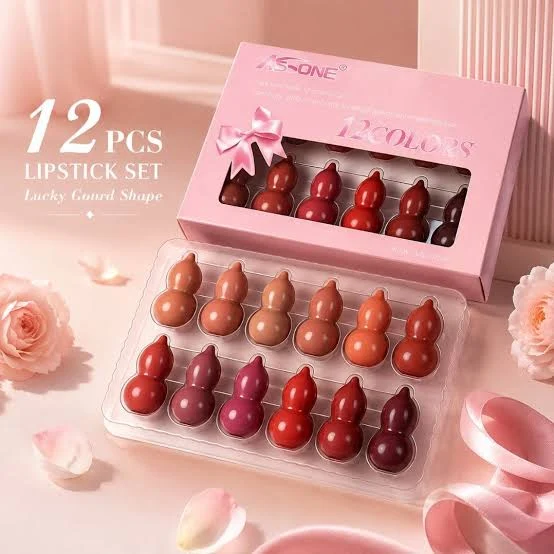

Best Beauty & Cosmetics in Rawalpindi: Practical Shopping Guide

Looking for the best beauty & cosmetics in Rawalpindi? This practical shopping guide helps you navigate the local and online options with clarity. The available products range from makeup essentials like the Mini Lipstick Set to hair and skincare tools such as the Laser Hair Growth & Scalp Massage Brush. While the category is labeled as beauty & cosmetics, some items, like the Electric Foot Callus Remover, fall into personal care rather than traditional makeup. This guide focuses on real-world comparisons, including delivery costs, return policies, and product usability. It highlights what to check before buying, especially for those opting for cash on delivery. Whether you're shopping in person or online, this guide ensures you make informed choices tailored to your needs.
Quick buying check: Match the actual item to your task, check its measurements or compatibility, and compare the full delivered price. Read the listing and policies before you order. The examples below are catalog evidence, not hands-on test results.
Key benefits of choosing Beauty & Cosmetics carefully
- Better fit for your task: select the specification or design your situation needs.
- Clearer budget: compare the item, delivery and any required extras together.
- Fewer avoidable returns: resolve missing measurements and compatibility questions before ordering.
- More useful ownership: check how the item will be stored, cleaned and used.
Selection criteria and matching the actual task for Beauty & Cosmetics
Evaluate products based on your specific needs such as skin type, desired effects, and usage frequency. Look for items that align with your daily routine and personal preferences. Check for ingredients that suit your skin and avoid products with harmful chemicals. Consider the brand's reputation and customer reviews to ensure reliability and effectiveness. Focus on products that address your main concerns, whether it's hydration, acne treatment, or anti-aging.
Verify the product’s purpose matches the task at hand. For example, a moisturizer should hydrate, while a cleanser should effectively remove impurities. Ensure the product’s claims are realistic and supported by evidence. Avoid overpaying for features you won’t use. Compare options based on practicality and long-term value rather than just price or brand name. Look for products that offer good value for money and have a proven track record. Check for any limitations in the product description and be cautious of exaggerated claims.
Always consider delivery options and return policies before purchasing. Choose sellers with clear and reliable shipping methods, especially if you prefer cash on delivery. Check for any additional costs such as shipping fees or taxes. Ensure the product arrives in good condition and matches the description. Be aware of return procedures in case the item doesn’t meet your expectations. Look for sellers with flexible return policies and clear communication. Read customer feedback about delivery experiences and return processes.
Fit, dimensions, compatibility or edition checks for Beauty & Cosmetics
Check product fit by comparing dimensions with your needs. Measure spaces where items will be used, like vanity areas or storage compartments. Ensure sizes match intended use, especially for tools or containers. Verify compatibility with local skin types or product types available in Rawalpindi. Look for details on packaging or descriptions that mention suitability for regional conditions. Some products may have different formulations for local climates, so check for any regional specifications.
Confirm edition or version details if products have different regional versions. Some items may vary in formulation or packaging based on distribution. Check for specific labels or descriptions that indicate local availability. Ensure the product aligns with what is commonly sold in Rawalpindi stores or online platforms. This helps avoid mismatches when purchasing from international or non-local sources. Look for any mention of regional certifications or approvals.
Review compatibility with local delivery services and payment methods. Some products may not support cash on delivery or may have higher shipping costs. Check if the item is available through trusted local sellers or platforms. Confirm if the product is suitable for the climate and usage patterns in Pakistan. This ensures the item meets practical needs and is accessible for delivery and returns. Check for any restrictions on international shipping or local import regulations. Some products may require additional documentation or fees.
Quality evidence and limitations of listing claims for Beauty & Cosmetics
Quality evidence for listing claims in the beauty and cosmetics category involves verifying product descriptions against actual items, ensuring accuracy in features, benefits, and specifications. Cross-checking with customer reviews and official brand information can help confirm reliability. In Pakistan, local market conditions and language barriers may affect the clarity of product details, making it essential to seek verified sources or local recommendations. Look for listings that include detailed ingredient lists, usage instructions, and country of origin to ensure transparency.
Limitations of listing claims often arise from incomplete or outdated information. Sellers may not always provide full details on product origins, ingredients, or usage guidelines. In Rawalpindi, this can lead to discrepancies between online listings and in-store availability. Shoppers should be cautious and prioritize platforms with transparent policies and clear return options. Be wary of exaggerated claims about product effectiveness or safety, and avoid relying solely on promotional language. Instead, focus on factual descriptions and user experiences to make informed decisions.
Practical advice includes focusing on verified seller ratings and checking for certifications relevant to beauty and cosmetics. Always review return policies and delivery terms before purchasing. In Pakistan, local regulations and product standards may vary, so relying on trusted sources and community feedback can improve shopping outcomes. Look for listings that provide clear information on product testing, shelf life, and storage requirements. When shopping online, use platforms that offer secure payment methods and customer support.
Budget tradeoffs and the full delivered cost for Beauty & Cosmetics
Budget tradeoffs in beauty and cosmetics shopping require careful evaluation of what is essential versus what is optional. Prioritize products that align with your daily needs and long-term goals. Consider how frequently you will use each item and whether the cost justifies the benefit. Look for value-driven options that offer quality without unnecessary expenses. Avoid impulse purchases that may not fit your routine or budget.
Full delivered cost includes more than just the product price. Factor in shipping, taxes, and any additional fees that may apply. These costs can vary significantly depending on the seller and delivery method. Always check the total cost before finalizing a purchase. Some sellers may offer free shipping for larger orders, which can impact your overall budget. Be mindful of these hidden expenses to avoid surprises.
When shopping for beauty and cosmetics in Rawalpindi, compare options from different sellers to find the best balance between cost and quality. Read reviews and check return policies to ensure you are making an informed decision. Consider local stores for immediate access and the ability to inspect products before buying. Online options may offer more variety but require attention to delivery details and potential delays. Always verify the reliability of the seller before proceeding.
Setup, care, storage and useful ownership for Beauty & Cosmetics
Setup for beauty and cosmetics in Rawalpindi involves verifying product expiration dates and ensuring packaging is undamaged before purchase. Store items in a cool, dry area away from direct sunlight to preserve quality. Keep products in their original containers to prevent contamination and label them if repackaging is necessary. Always read and follow the instructions provided to ensure safe and effective use. Check for any specific storage requirements mentioned on the label, such as refrigeration needs for certain products.
Care for beauty and cosmetics includes regularly cleaning tools like brushes, sponges, and applicators to prevent bacterial buildup. Use mild, pH-balanced cleansers for skincare products to avoid skin irritation. Avoid sharing makeup to reduce the risk of infections. Replace products after their recommended usage period, typically six to twelve months, to maintain effectiveness and safety. Keep products away from moisture and heat to prevent degradation. Regular maintenance ensures products remain hygienic and functional.
Storage should protect items from humidity and extreme temperatures. Use airtight containers for powders and creams to extend their shelf life. Keep products out of reach of children and pets to avoid accidental ingestion. Inspect items regularly for changes in color, texture, or smell that may indicate spoilage. Proper storage not only maintains product quality but also ensures safety. Organize storage areas to keep items accessible and easy to manage. This helps in tracking expiration dates and using products before they expire.
Common mistakes, arrival inspection and returns for Beauty & Cosmetics
Common mistakes when buying beauty and cosmetics in Rawalpindi include not checking product expiration dates and ignoring ingredient lists. Many shoppers overlook these details, leading to ineffective or harmful products. Always verify the manufacturing and expiry dates before purchasing. Also, be cautious of counterfeit items that may look genuine but lack quality. Research the brand and read reviews to ensure authenticity and safety. Avoid rushing the decision, especially when buying online. Take time to understand the product’s purpose and suitability for your skin type.
Arrival inspection is crucial to ensure products are in good condition. Check for any damage to packaging or product integrity upon delivery. If items are damaged, refuse the package and contact the seller immediately. For online purchases, inspect the product before accepting it. Keep the original packaging for returns if needed. Document any issues with photos and contact customer support. This helps in resolving disputes and ensures a smooth return process. Always check the product against the order to confirm it matches what was purchased.
Returns can be complicated, so understand the seller’s policy before buying. Some retailers in Rawalpindi offer returns within a specific timeframe, while others do not. Keep all receipts and order confirmations for reference. If returning online, follow the provided instructions carefully. Avoid using unauthorized return centers, as this may void your rights. Be aware of any restocking fees or conditions. If issues arise, communicate clearly with the seller and seek resolution through official channels. Always keep records of all interactions.
Future changes and responsible shopping decisions for Beauty & Cosmetics
Future changes in the beauty and cosmetics market in Rawalpindi may include more sustainable packaging and locally sourced ingredients. Shoppers should look for brands that prioritize eco-friendly practices and ethical production. Staying informed about industry trends can help make more conscious purchasing choices. Supporting local and responsible brands can also contribute to a more sustainable beauty industry. As consumer awareness grows, demand for transparency in sourcing and production methods is likely to increase.
Responsible shopping decisions involve evaluating product claims and understanding ingredient safety. Consumers should research brands and read reviews from other Pakistani buyers. Checking for certifications and understanding what they mean can help avoid misleading information. Making informed choices ensures better value and safer products for personal use. It is also important to consider the long-term impact of purchases, such as how products are disposed of or their effect on local communities.
Shopping for beauty and cosmetics in Rawalpindi requires attention to delivery options and return policies. Choosing sellers with reliable shipping and clear return processes can prevent issues. Being aware of hidden costs like delivery fees helps manage overall expenses. Planning purchases based on needs and available options leads to more satisfying shopping experiences. Additionally, considering the availability of cash on delivery can provide added convenience and security. Staying informed about seasonal promotions and discounts can also help maximize savings.
A useful buying decision connects your actual task to a clearly described item. A category name, attractive photo or low headline price cannot replace checking what will arrive and whether it fits.
Illustrative Pakistan use cases for Beauty & Cosmetics
Illustrative: compare a fixed PKR budget
A person with a fixed budget in Rawalpindi should compare the total delivered cost of beauty products by adding the listed price and delivery fee. For example, a mini lipstick set priced at PKR 584 with a PKR 250 delivery fee totals PKR 834. If the product is under PKR 5000, the delivery fee applies. This helps in making informed choices when shopping online for cosmetics, ensuring the total cost fits within the budget.
Illustrative: check fit for shared home use
Someone checking fit or compatibility for shared home use should consider products that suit multiple users. A laser hair growth brush, for instance, can be used by different family members. Its ergonomic design and single-button operation make it easy to share. Testing the product’s usability for various hair types and scalp conditions ensures it meets the needs of everyone in the household. This approach helps in selecting versatile beauty items that provide value for shared use.
Illustrative: plan delivery and arrival inspection
A person ordering to a smaller town in Rawalpindi should plan for longer delivery times and inspect the product upon arrival. Items like the Kimisky electric foot callus remover may take 3-6 working days to reach. Upon delivery, check for any damage or incorrect items before accepting the package. Knowing the return policy, including the 7-day return window and no return fee for damaged or wrong items, helps in resolving issues quickly.
Comparison and evidence from actual catalog listings
The following listing snapshot was recorded at 2026-10-26 05:20:21 PKT. These are seller-provided descriptions, not independent performance tests. A category label does not confirm that an item suits every task discussed in this guide. Check the linked item for its current price, availability, measurements and included accessories.
| Listed item | Snapshot price | Listing evidence and limits |
|---|---|---|
| Mini Lipstick Set – Lucky Gourd Shape, Cute Compact Lip Color Collection for Everyday Makeup | Rs 584 | Listing description: Mini Lipstick Set – Lucky Gourd Shape combines a unique decorative design with convenient everyday makeup use. The compact lipstick format is easy to carry in a handbag or makeup pouch, making it suitable for quick touch-ups at home, work, parties, or while traveling. Confirm any unspecified detail with the store. |
| Laser Hair Growth & Scalp Massage Brush | Rs 3,732 | Listing description: Rechargeable laser hair growth and massage brush. This device helps in stimulating the scalp for improved hair health. Ergonomic design, easy to use with a single button operation, and compact for travel. Confirm any unspecified detail with the store. |
| Kimisky Electric Foot Callus Remover - High Quality Big Box | Rs 725 | Listing description: Kimisky Electric Foot Callus Remover - High quality, heavy duty big box edition. Features easy USB charging, suitable for various power sources (5V 0.5-1A). Perfect for smooth and soft feet. Confirm any unspecified detail with the store. |
Delivery and returns: Sasta Milaga currently lists Rs 250 delivery, free above Rs 5,000. Usual estimates are 2-4 working days in major cities and 3-6 elsewhere. Returns can be requested within 7 days; damaged or wrong items return free, while other returns cost Rs 250. Check delivery terms and return terms for current conditions.
Frequently asked questions about Beauty & Cosmetics in Pakistan
How do I choose Beauty & Cosmetics for my needs?
How do I choose Beauty & Cosmetics for my needs? Consider your daily routine and preferences. For example, a mini lipstick set offers portability for quick touch-ups, while a hair growth brush supports scalp health.
What should I check in the listing before ordering?
What should I check in the listing before ordering? Review the product description for key features like size, function, and usage. Check the listed price and any available discounts.
How do I compare the full cost in Pakistan?
How do I compare the full cost in Pakistan? Add the listed price to any delivery fee and potential return charges. For example, a product priced at 584 PKR with a 250 PKR delivery fee totals 834 PKR.
How much is Sasta Milaga delivery and how long does it take?
Sasta Milaga currently lists Rs 250 delivery, with free delivery on orders above Rs 5,000. Usual estimates are 2-4 working days in major cities and 3-6 working days elsewhere. Read the linked delivery page for current conditions and allow for your specific address.
Can I return a damaged, wrong or unsuitable item?
The published return window is 7 days after delivery. Damaged or wrong items return free, while other returns carry a Rs 250 fee. Read the linked return policy, keep the packaging and report the issue promptly.
Are the product examples independently tested recommendations?
No. The examples are a dated snapshot of seller-provided catalog listings. We have not independently tested these items or verified customer outcomes. Prices and availability can change. Open each product page, compare the stated specifications with your needs and ask the store about missing details.
Conclusion
The best beauty & cosmetics in Rawalpindi offer a wide range of products from compact lipsticks to hair growth tools, all available through online platforms like Sasta Milaga. While the listings provide a snapshot of current inventory, they do not include verified reviews, pricing stability, or long-term performance details. Shoppers should focus on product descriptions, delivery policies, and return options before purchasing. For a practical approach, prioritize items with clear usage benefits, check delivery timelines, and plan purchases to meet free delivery thresholds. Always review return policies to ensure flexibility. These steps help navigate the available options with confidence.
Choose with a clear checklist. Browse Beauty & Cosmetics and compare current listing details. Read how to order before placing a cash-on-delivery order. Take time to confirm the item fits your needs.
Tags: best beauty & cosmetics in Rawalpindi, beauty & cosmetics online Pakistan, buy beauty & cosmetics online, beauty & cosmetics price in Pakistan, beauty & cosmetics comparison, beauty & cosmetics shopping checklist, beauty & cosmetics cash on delivery, how to choose beauty & cosmetics for everyday use, what to check before buying beauty & cosmetics online, compare beauty & cosmetics with delivery costs in Pakistan, beauty & cosmetics buying guide for Pakistani families, questions to ask before ordering beauty & cosmetics with COD
More guides
Umrah travel checklist: documents, packing and planning
A practical Umrah checklist: passport and visa documents, what to pack for Makkah and Madinah, health preparation and booking tips.
Air conditioners (split) size fit compatibility Pakistan: Size, Fit and Compatibility Checklist
Compare Air Conditioners (Split) in Pakistan: listing details, fit and delivered costs. Read product, delivery and return information before ordering.
Academic books size fit compatibility Pakistan: Size, Fit and Compatibility Checklist
Compare Academic Books in Pakistan: listing details, fit and delivered costs. Read product, delivery and return information before ordering.